~ Памятники ~
Не знаете, где лучше приобрести памятник во Владимире или Владимирской области? Хотите найти достойную и проверенную компанию с отличной репутацией? Только в нашей компании процесс выбора памятника будет легким, а готовая продукция оправдает все ожидания. В нашей компании мы принимаем заказы на создание монументов любой сложности. Колоссальный опыт работы, современное оснащение, применение качественных технологий в области отделки и оформления настоящего камня позволяют нам получить 100% производимой продукции. Каждый памятник и деталь ритуального ансамбля, произведенные нашими специалистами, достойно украсят место захоронения и на долгое время сохранят память об умершем.
~ Памятники из гранита ~
Среди наших клиентов наибольшую распространенность получили памятники из гранита. Доступная цена и широкие возможности декора - это далеко не главные аргументы. Среди причин заказать памятники на могилу из износостойкого материала с оригинальным естественным орнаментом:
Если вы заказываете памятник во Владимире, то увидите, что на такие изделия цены сильно отличаются и зависят от породы камня, размеров изделия, сложности оформления. Мы производим качественные памятники и предлагаем доступную стоимость.
Гранит и изделия из него являются самыми прочными, не имея отрицательных дефектов. В отличие от мрамора, состав такой породы многослойный - слюда, кварц, плагиоклаза и другие добавки - все это основа этого материала. Гранит отличается многообразием цветов: светло-серый, малиновый, красный, оранжевый, голубой. Если вы решаете купить памятник в нашей компании, то получаете высокий результат и достойное качество изделия. Даже самый хрупкий тип гранита надежнее любого другого материала. Масса одного базового монумента составляет 100 кг, поэтому доставка и монтаж надгробий должна выполняться специалистами.
 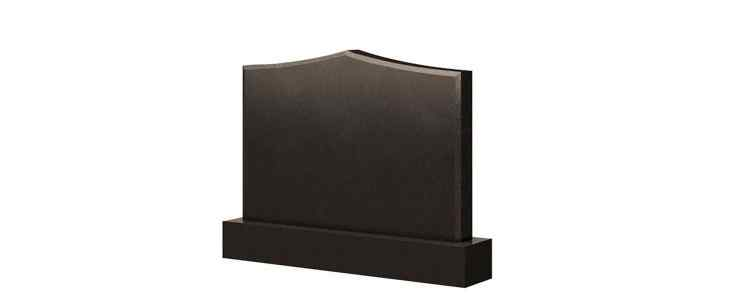
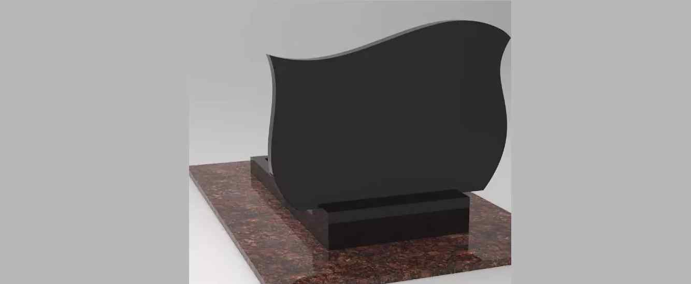
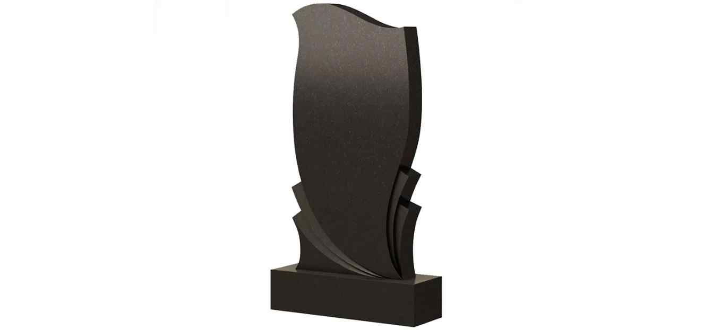
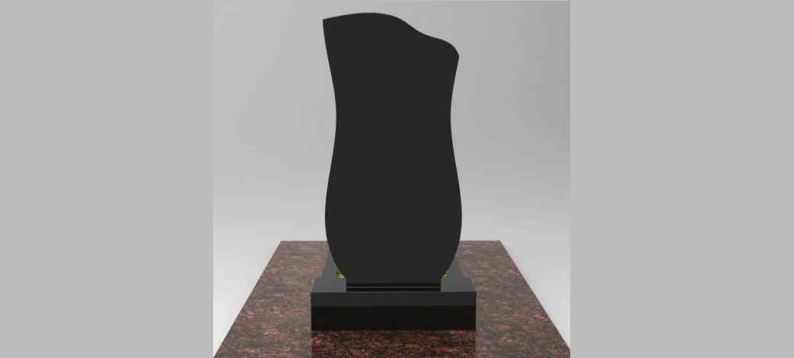
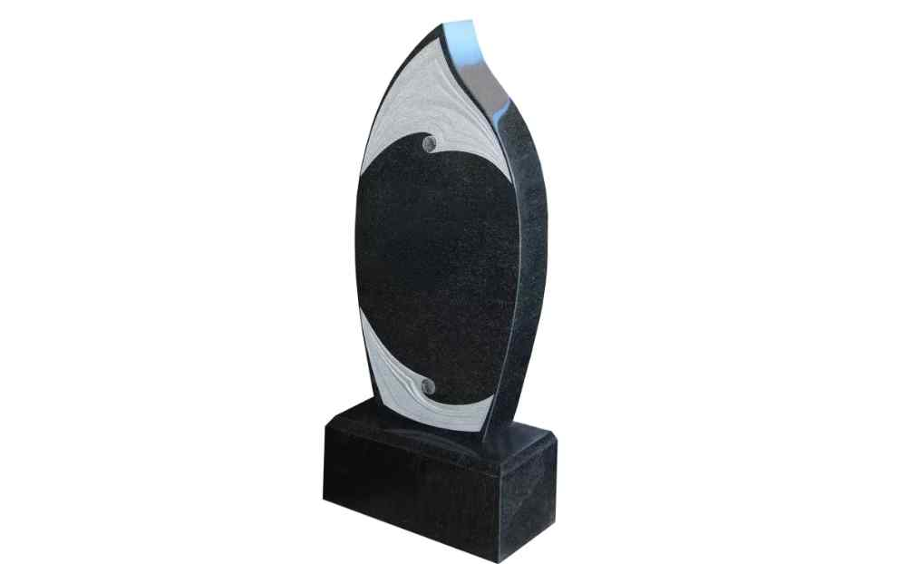
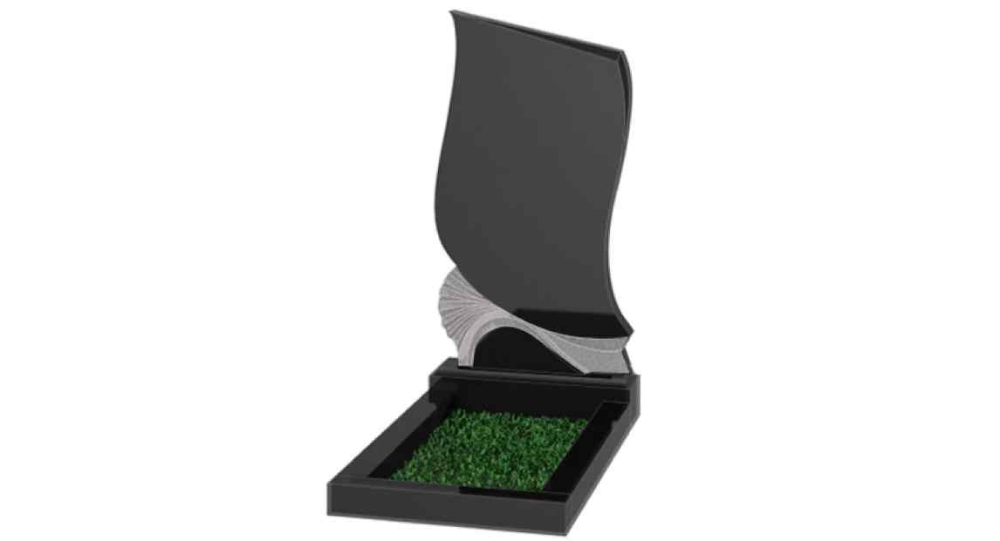
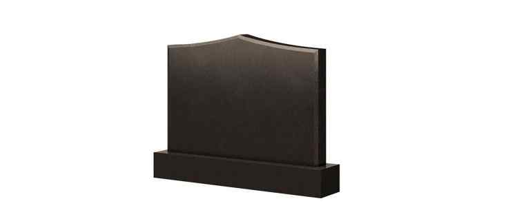
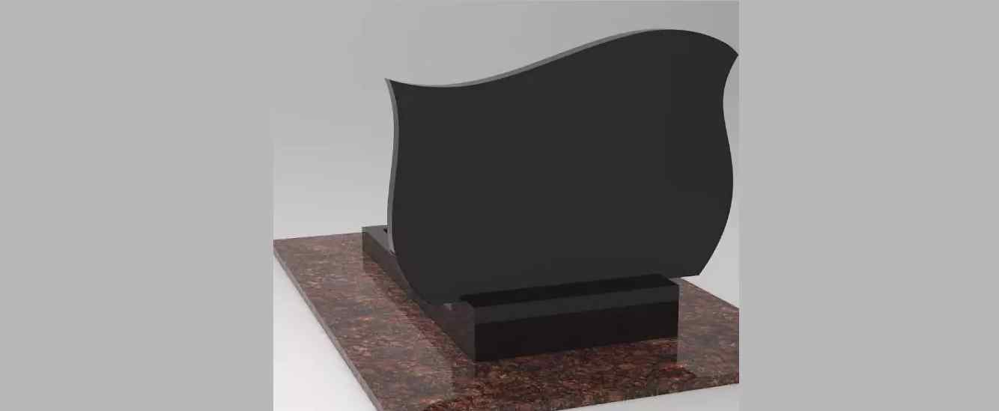
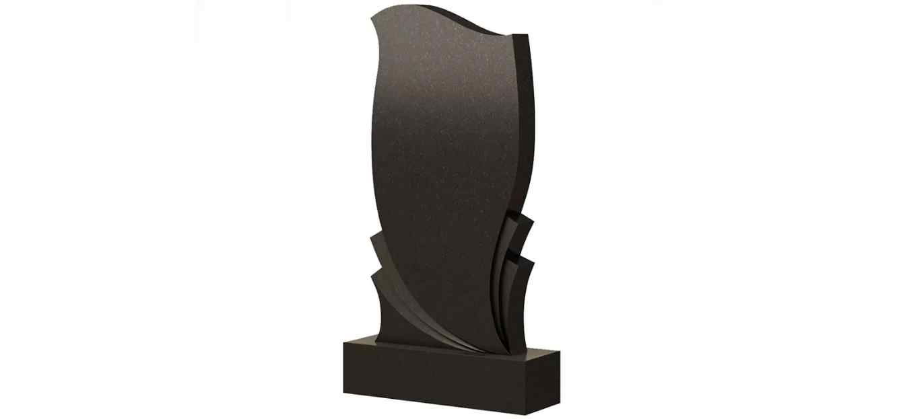
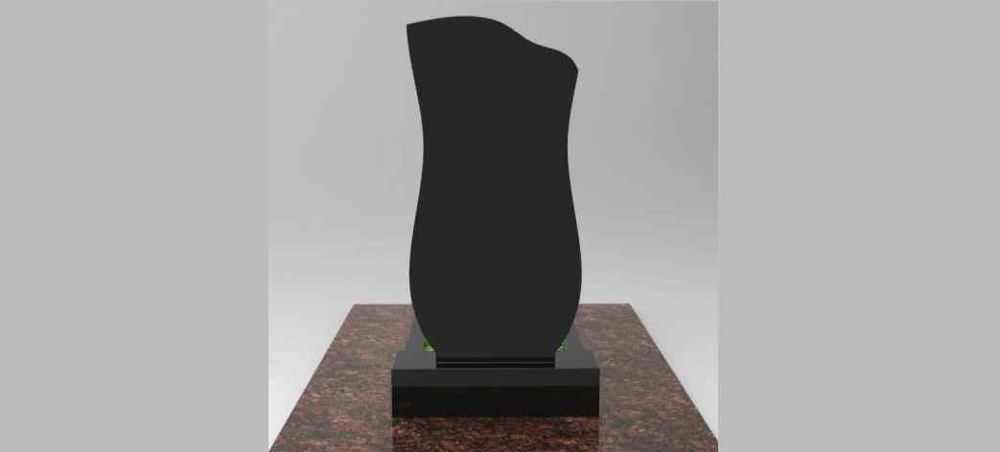
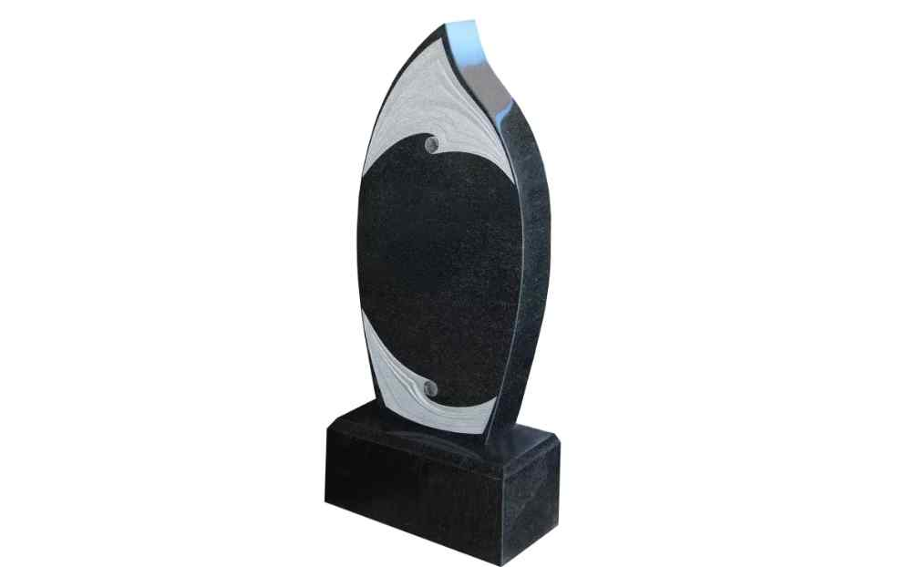
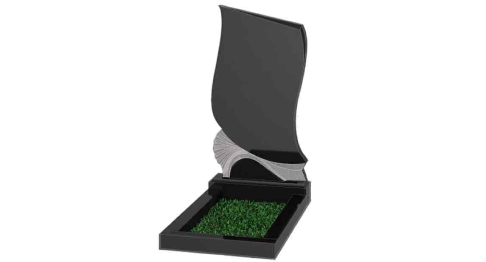
 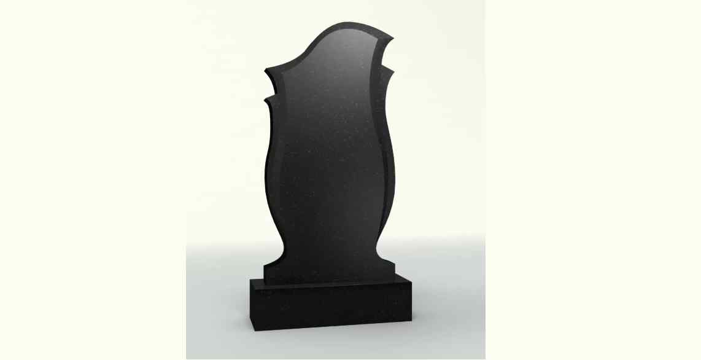
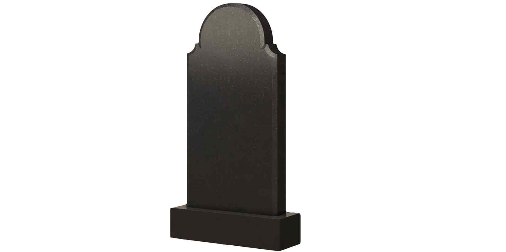
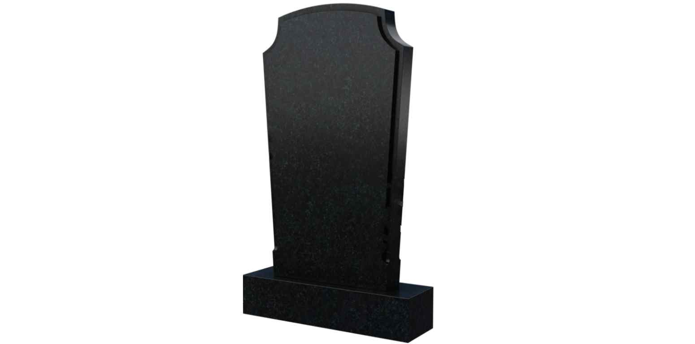
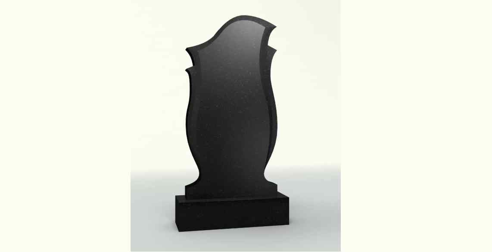
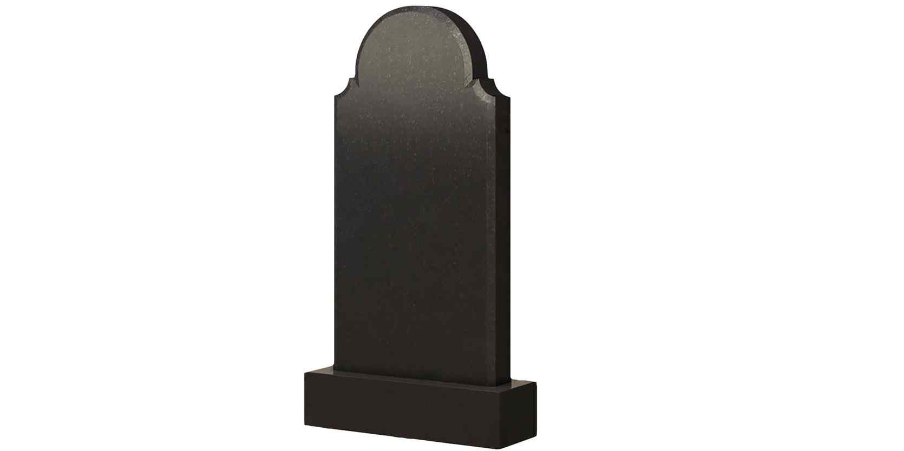
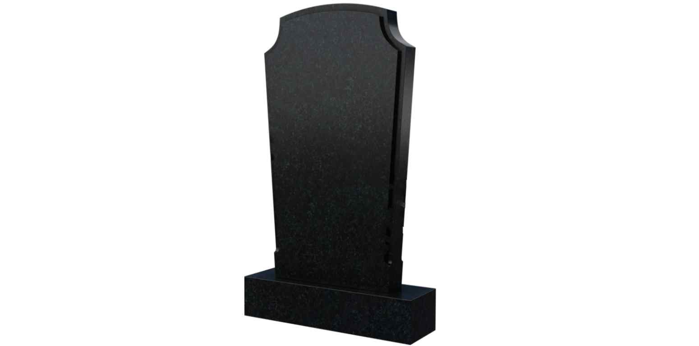
~ Памятники из мрамора ~
Сегодня памятники из мрамора могут позволить не только богатые люди, но и со средним достатком. Если Вы располагаете скромным бюджетом, можно приобрести памятник в готовом виде недорого, или просто надгробную плиту. Даже самое простое решение будет смотреться добротно и оригинально. Кроме этого, Вы всегда сможете заказать индивидуальный памятник. Наши специалисты с большим удовольствием помогут в выборе и предложат наиболее выгодный и качественный материал для изготовления надгробия. Мы не только создаем проекты и изготавливаем памятники из гранита и мрамора, но и предлагаем комплексные услуги по благоустройству могилы и окружающей территории.
Памятники из мрамора пользуются спросом за счет своих ярких преимуществ:
 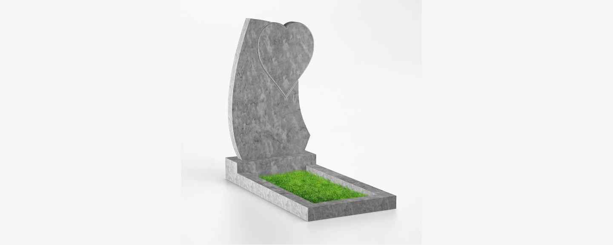
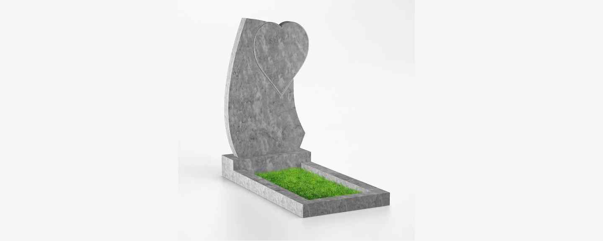